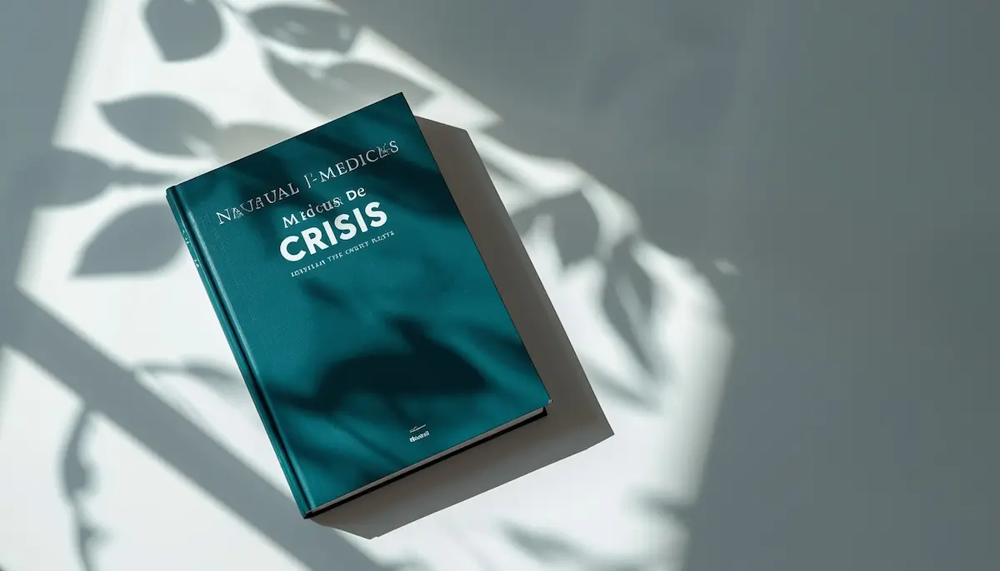
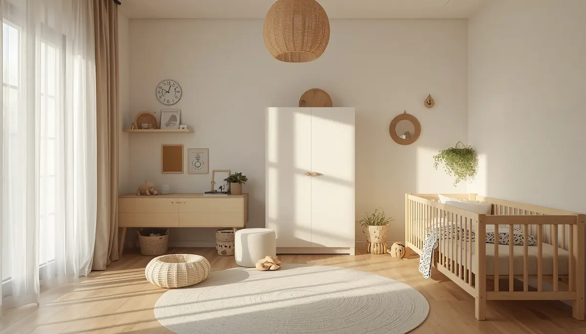

Epilepsia escolar: protocolos y seguridad
La epilepsia en el entorno escolar no debería ser una barrera para el aprendizaje ni para la integración social del menor. Contar con información clara, protocolos de actuación sencillos y una comunicación fluida entre la familia, el equipo médico y los educadores permite que la escuela sea un espacio seguro y normalizado. He reunido aquí los pasos esenciales para la gestión de crisis y la creación de un entorno de confianza. Pincha en cada tarjeta para profundizar en cada tema.
Normalizar la epilepsia en el entorno escolar
Descubre cómo fomentar una actitud natural en el aula y desmitificar esta condición para facilitar la integración plena del alumno.

Entender los diferentes tipos de crisis
Distingue entre crisis focales y generalizadas para saber exactamente cuándo y cómo es necesaria la intervención inmediata.
Protocolo básico de actuación ante una crisis
Pasos fundamentales: proteger, lateralizar, cronometrar y mantener la calma. Qué hacer y qué evitar siempre durante una crisis.

Adaptaciones para un entorno seguro
Medidas preventivas en el aula y en casa para reducir riesgos, favoreciendo la autonomía del niño con seguridad.

Gestión de la medicación en horario escolar
Cómo organizar la administración de fármacos de rescate, autorizaciones y comunicación con el personal sanitario del centro.
Colaboración familia-escuela para el bienestar
Claves para construir un plan de acción compartido y asegurar que el niño reciba el apoyo constante que necesita.
Participación plena en excursiones y deporte
Cómo adaptar actividades físicas y salidas escolares para que el alumno participe con plena seguridad e igualdad de condiciones.
Fomentar la autoestima y la resiliencia
Acompañar al niño para que comprenda su condición sin que esta defina sus capacidades ni su seguridad personal.